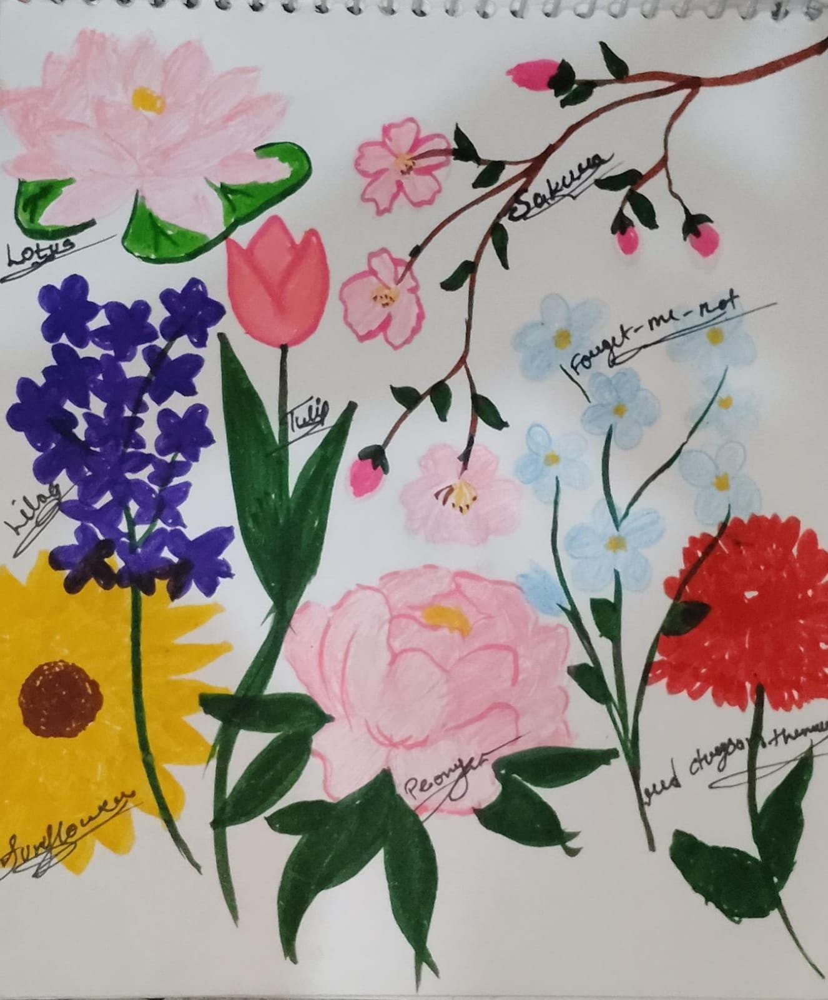

Tulip 🌷
Tulip for you cause perfect, deep, and unconditional love.
Lilac 💜
Lilac for you cause first love 💖
Sunflower 🌻
Sunflower for you cause pure, unwavering love, unyielding loyalty, and deep devotion. Because they physically track the sun to bloom.
Forget-Me-Not
Forget-Me-Not for you cause true love, devotion, and enduring connections that withstand time and distance 💖
Red Carnation ❤️
Red Carnation for you cause deep love, passion, and affection 💕
Peonies 💗
Peonies for you cause romance, lasting love, and marital bliss 💗
Lotus 🪷
Lotus for you cause devotion, resilience, and pure affection. 💓
Sakura 🌸
Sakura for you cause a powerful symbol of romance, affection, and the beauty of relationships 💖

Thank You So Much, Baby! 🎨✨
Aapne mere liye apna precious time nikal kar, apne haathon se ye beautiful drawing banayi. Lotus, Sakura, Lilac, Tulip, Forget-me-not, Sunflower, Peonies aur Red Carnation—ek-ek phool ko itne pyaar se draw aur paint karne ke liye thank you!
Mere liye ye duniya ka sabse pyara aur sabse keemti gift hai. I will keep this masterpiece safe with me forever. You are the best!